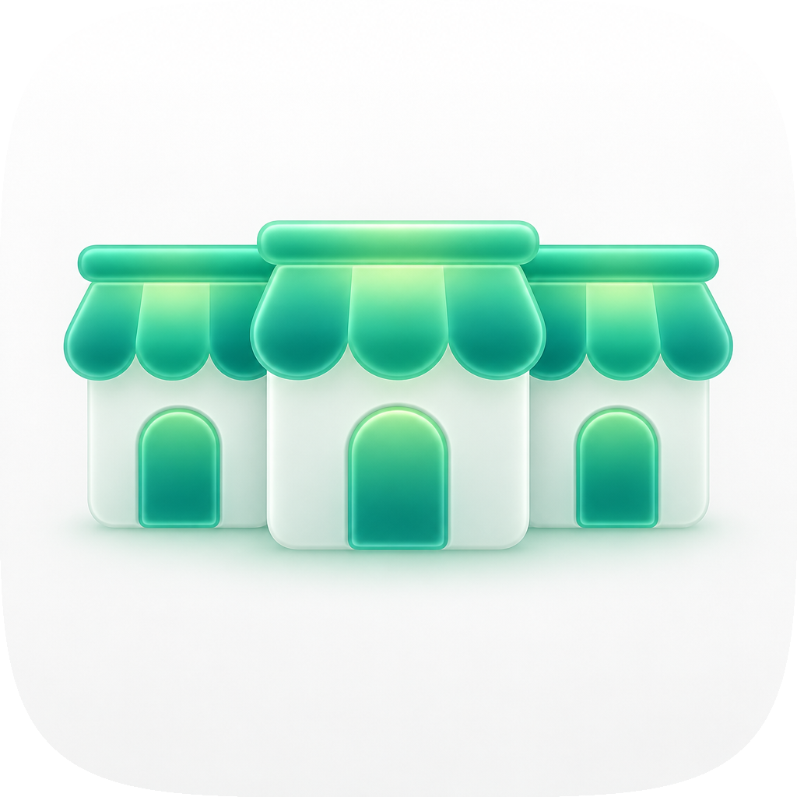
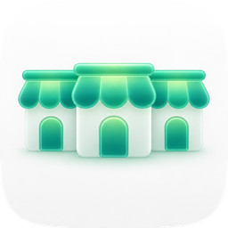
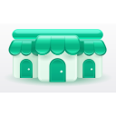
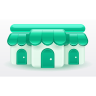
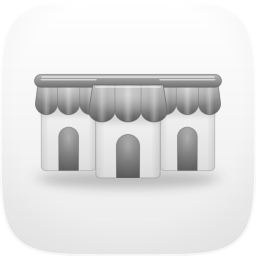
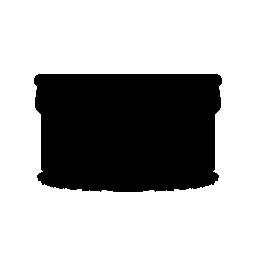

Direction "Shopfront Row" (Tahoe porcelain register, jade gel) · one shared spec, three engines · every take audited on real renders at 1024 / 128 / 64 / 48 / 32 / 16. The master went through five fidelity rounds against the Engine C raster; the log is in loop-runs/LOG.md.
Icon variation takes with renders, rubric scores and verdicts
Take
Hero at 1024, then renders at 128 / 64 / 48 / 32 / 16 css px (2× retina sources), plus the 16px squint magnified
Rubric
Verdict
A · icon.svghand-authored layered SVG, fidelity round r05 — SHIPS
hero 10241286448321616 ×6
11 / 12
Passes checks 1–4: shares the set squircle as a clip, optically centred at ~73% width, the filled silhouette reads as a row of shops, and the awning band plus three doors survive at 16px. Layered bg / mid / fg / highlight; grayscale and blue tint keep shape and value (row below). Fails #7: the lit centre of the gel awning is 1.95:1 against the porcelain ground (doors are 4.2:1 against the bodies). Material came from the Engine C raster over five measured rounds; Engine B's pillowed awning panels were salvaged in round 2.
Won the material read: pillowed gel awnings, emissive door light, porcelain bodies with rim light, a jade glow at the foot. Not shippable as the master: a flat raster fails #10 by construction, and its near-white bodies sit at about 1.2:1 against the ground (#7). It also drops the shared rail, giving each shop its own cap, which removes the one-assistant idea.
C2 · icon-engineC-1c0b17-2.pngGPT Image raster, second take

hero 1024

1286448321616 ×6
10 / 12
Same composition as C1 with a cooler teal cast and flatter gel; lost to C1 on material. Same #7 and #10 failures as C1.
B · icon-engineB-arrow-b9b0db.svgArrow 2 vector take
hero 1024128

64

48321616 ×6
8 / 12
Hard-fails #1 and #2: Arrow returned a wide rectangular canvas on a baked grey ground, so it neither fills nor respects the squircle. Strong shape ideas inside it: each scallop a domed pillow panel, a thick lit rail, door knobs. The pillowed panels were salvaged into the master.
Variant and silhouette checks on the master
default

grayscalemono tint

silhouette
Recommendation: ship A (icon.svg). It is the only take that is a layered vector on the shared squircle, passes checks 1–4 on the real renders, and keeps the single rail that says "one assistant, several stores". Its material was measured against C1 at five sizes; the loop accepted the structure round and an out-of-family judge (gpt-5.6-sol, asked in both orders) preferred the material round over it. This is a decorative icon (README, social card, favicon), so the material is baked into the file rather than left to Icon Composer. Known liabilities to revisit: the lit awning centre is 1.95:1 against the porcelain ground (#7); bodies are mint-tinted to hold value at 16px, so they read greener than C1's porcelain; the panel that promoted r05 had one decisive judge, because the OpenAI and Cursor lanes could not run; no dark-mode variant is authored.
Rubric: the 12-point icon audit from icon-directions.md (mask discipline, grid, silhouette, 16px identity, single light model, palette discipline, figure-ground, depth coherence, era coherence, variant robustness, personality, no text) — checks 1–4 non-negotiable, delivery bar ≥10/12. Raster takes audited on their squircle-masked 1024 versions. Renders produced by audit_sheet.py render (1024 / 256 / 128 / 96 / 64 / 32 sources); verified by its check subcommand.